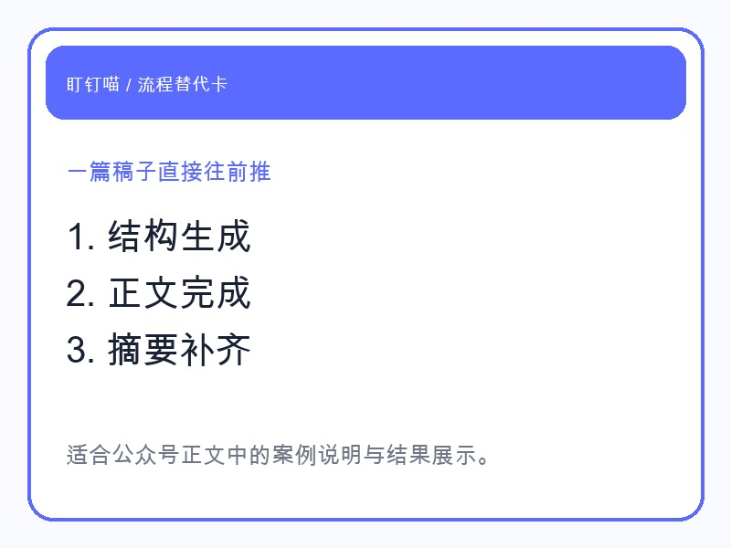
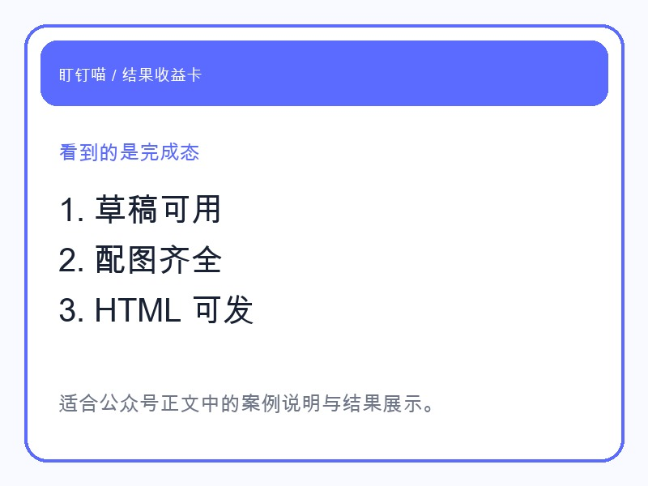

现在很多人对 AI 写稿已经不陌生了。
但真正落到公众号运营里，问题从来不是“它能不能写一段话”，而是：它能不能把一篇稿子从空白做到可发。
所以这次我没有只让龙虾生成一段正文。
我让它接手一整篇公众号文章，看它能不能把结构、正文、摘要、配图和排版一路接起来。
龙虾真正做的事，是把写稿拆成几步，然后逐步交付：

这跟“吐一段 AI 文案”完全不是一回事。
因为对运营者来说，最痛苦的往往不是正文，而是正文前后那些必须自己补的工作。
这次让我最有感觉的，是它输出的不再只是一个 .md 文件。
而是一套可继续往下走的交付：

对一人公司来说，这个差别非常大。
半成品会一直拖着你。
完成态才会真正减少你的手工。
如果你想用龙虾做内容，不一定是要它“写得多有文采”。
更实际的用法是：
这样你看到的不是一个“帮你续写”的工具，而是一个真的能接活的公众号搭子。
很多工具只能给你一段内容。
龙虾更有价值的地方，是它可以把写稿过程本身做成结果。
这才是运营里真正省时间的地方。